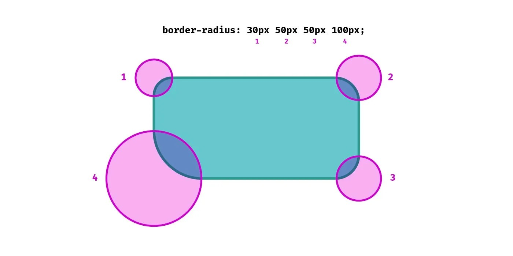
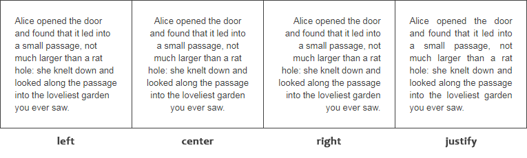

| Nombre del atributo |
Descripción |
Valores posibles |
Ejemplo de uso |
Imagen representativa |
Fuente de información |
| font-size |
Define el tamaño de la fuente del texto |
px (pixeles), % (porcentaje), em (relativo al tamaño del elemento padre), rem (relativo a la raíz del documento) |
|
|
Plum Grove |
| border-radius |
Redondea las esquinas de un elemento |
px o % (define el grado de redondez). |
|
 |
Logical Border Radius |
| display |
Controla cómo se muestra un elemento en la página |
block=Ocupa todo el ancho disponible, inline=No genera salto de línea, inline-block=Similar a inline, pero permite
definir dimensiones, none=Oculta el elemento |
|
 |
YouTube |
| flexbox (display: flex;) |
Convierte un contenedor en un contenedor flexible para organizar elementos internos |
display: flex; (activa el modelo flexbox), justify-content: center; (centra horizontalmente), align-items: center;
(centra verticalmente). |
|
 |
MDN |
| position |
Controla la posición de un elemento en la página |
static (posición por defecto), relative (posiciona el elemento respecto a su posición original), absolute
(posiciona respecto a su primer ancestro con position: relative;), fixed (se mantiene en la misma posición al hacer
scroll), sticky (se comporta como relative hasta cierto punto, luego se fija). |
|
 |
baakademi |
| box-shadow |
Agrega sombra a un elemento |
px y color |
|
 |
Front-end Tools |
| overflow |
Controla cómo se maneja el contenido que se desborda de un contenedor |
visible (contenido visible aunque se desborde), hidden (oculta el contenido que se sale del contenedor), scroll
(agrega una barra de desplazamiento), auto (agrega la barra solo si es necesario). |
|
 |
aprenderaprogramar.com |
| z-index |
Define el orden de apilamiento de los elementos (qué elemento se muestra encima de otro) |
Un número (z-index: 1; está por encima de z-index: 0;), auto (por defecto). |
|
 |
DEV Community |
| opacity |
Controla la transparencia del elemento |
opacity: 1; (totalmente visible), opacity: 0.5; (semi-transparente), opacity: 0; (completamente invisible). |
|
 |
CSS Essential Guides |
| margin y padding |
Margin define el espacio exterior alrededor del elemento y padding define el espacio interior dentro del elemento |
px (pixeles), % (porcentaje), em (relativo al tamaño del elemento padre), rem (relativo a la raíz del documento) |
|
 |
aprenderaprogramar.com |
| text-align |
Controla la alineación del texto dentro de un elemento |
left=Alinea el texto a la izquierda, right=Alinea el texto a la derecha, center=Centra el texto, justify=Justifica el
texto (alineado a ambos lados). |
|
 |
WildLearner |
| cursor |
Define la apariencia del cursor cuando pasa sobre un elemento |
default=Cursor normal, pointer=Manito, para indicar enlaces o elementos clickeables, text=Cursor de texto, not-allowed
=Indica que la acción no está permitida. |
|
|
ReplayBird |
| visibility |
Controla si un elemento es visible o no sin afectar el diseño |
visible=Muestra el elemento, hidden=Oculta el elemento pero mantiene su espacio en la página. |
|
|
Instagram@sobrecodigo |
| background-image |
Permite establecer una imagen como fondo de un elemento |
url("imagen.jpg")=Usa una imagen como fondo, none=No hay imagen de fondo. |
|
|
programiz |